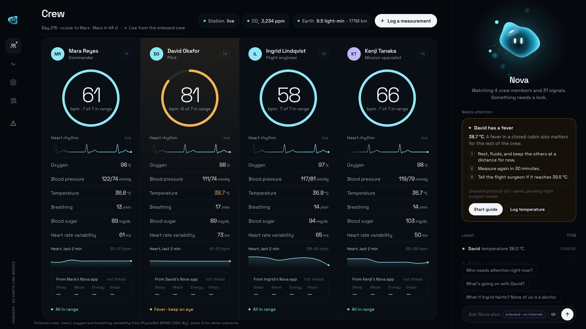
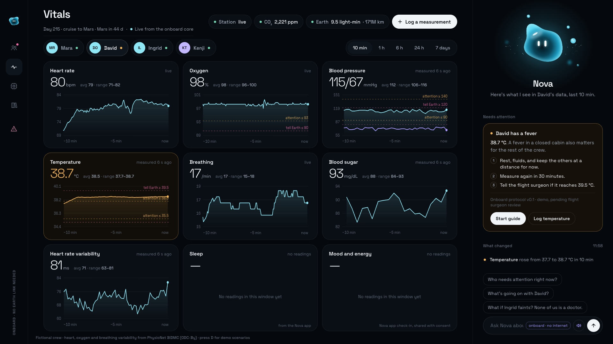
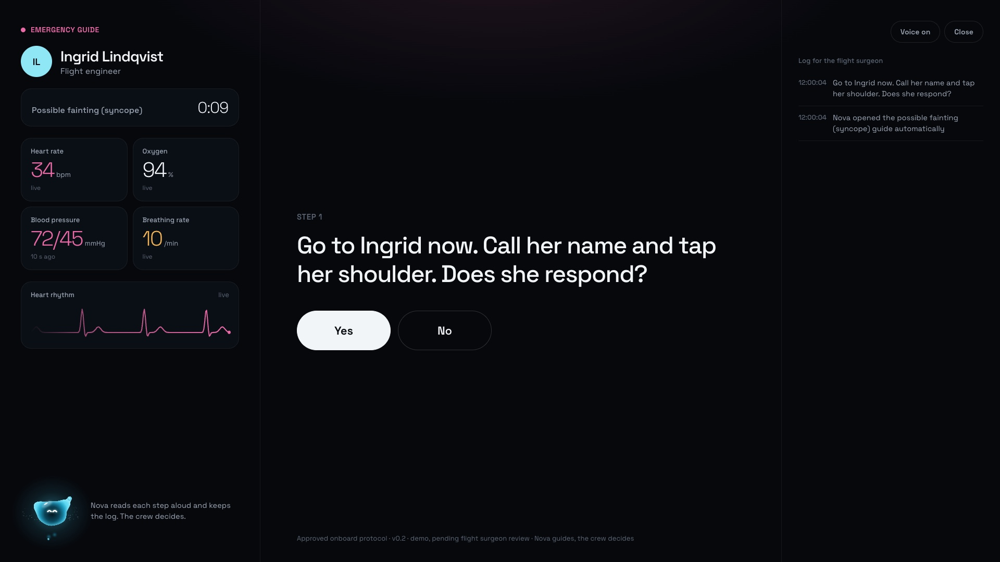
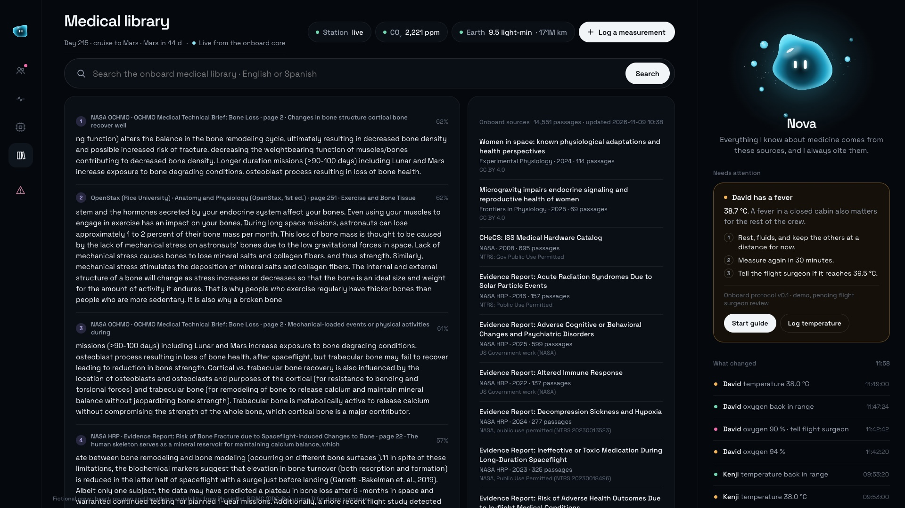
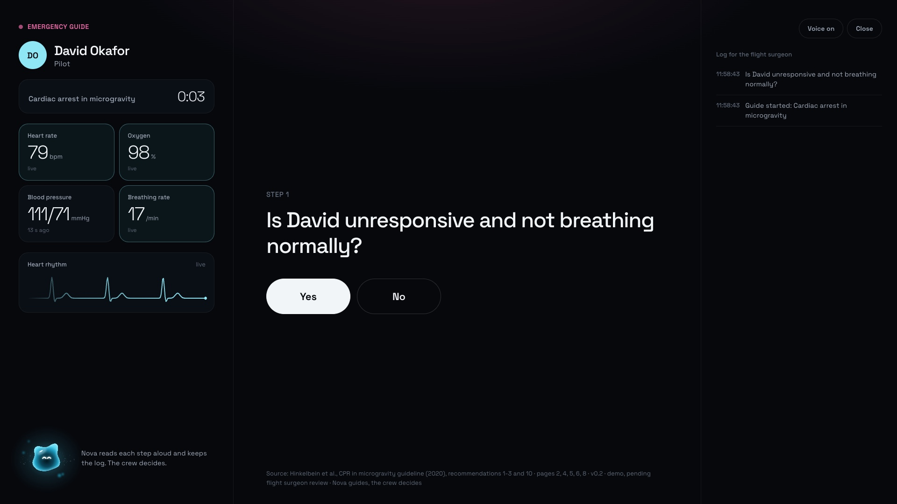

Una pantalla que llena cualquier ventana y se lee a dos metros
Aplicación de escritorio con Tauri 2: el proceso en Rust levanta el enlace y la ventana muestra la interfaz web. La escena llena la ventana a cualquier proporción, sin franjas negras: se diseña sobre una referencia de 1800 × 1000 y la letra crece o se achica con la ventana, mientras la grilla reparte el espacio que sobra. En inglés para el jurado, con NOVA como el único elemento con luz. Todas las capturas de este informe son de la aplicación real corriendo en el Mac de desarrollo.

Vista Crew en vivo con el simulador. David tiene fiebre (38,7 °C) y su tarjeta pasa a ámbar; NOVA lo resume a la derecha con los pasos del protocolo.
Qué muestra cada tarjeta de tripulante
Anillo de pulso con cuántos signos están en rango (6 of 7 in range) y el color del peor nivel.
Trazo de ritmo cardíaco en vivo y siete signos con su antigüedad (10 s ago).
Gráfico de los últimos 2 minutos y lo que llega del teléfono: sueño, ánimo, energía y pasos.
Barra superior y columna de NOVA
Día de misión y fase calculados (Day 215 · cruise to Mars · Mars in 44 d).
Estado de la estación, CO₂ de cabina y distancia a la Tierra en minutos-luz y kilómetros.
NOVA con su resumen, la tarjeta de lo que necesita atención, lo que cambió y la caja para preguntarle.
Crew
Toda la tripulación de un vistazo.
Vitals
Series de 10 min a 7 días por persona.
Systems
El núcleo F Prime en lenguaje claro.
Library
Búsqueda en las 32 fuentes médicas.
B&N · NASA Space Apps 2026
NOVA · Informe técnico05 · NOVA PC
05 · Vitals y emergencias automáticas
La historia de cada signo y una guía que se abre sola

Vitals
Ocho gráficos por persona con promedio y rango de la ventana, y las líneas de los umbrales vigentes dibujadas encima: ámbar para atención, magenta para avisar a la Tierra. Ventanas de 10 min, 1 h, 6 h, 24 h y 7 días.
Los datos salen de historia.rs: segundo a segundo por 6 horas y resumen por minuto por 30 días, en archivos NDJSON por día que se recargan al reiniciar.
Guía automática
Cuando el enlace reconoce un patrón grave en una persona (aquí, pulso de 34 y presión de 72/45 en Ingrid), abre la guía del protocolo que corresponde sin esperar a que alguien la busque.
Cada paso es una pregunta de sí o no. NOVA lo lee en voz alta con la voz local y cada respuesta queda con su hora en la bitácora para el cirujano de vuelo. Los signos de la persona siguen en vivo a la izquierda.

Pieza
Archivo
Qué hace
Vista general y estado
ui/app.js
Recibe el flujo SSE, pinta Crew, cambia de vista y abre el registro manual de mediciones.
Gráficos
ui/vitals.js, graficos.js
Series con /v1/historia, umbrales del estado y escalas automáticas.
Guía de emergencia
ui/guia.js
Árbol de pasos con condiciones sobre signos medidos, metrónomo y bitácora (POST /v1/bitacora).
Historia
src/historia.rs
Anillos en memoria por serie, minutos y alertas en disco, resúmenes de 24 h para el informe.
Ingreso manual
POST /v1/ingreso
Pasa por el núcleo (UDP 50052) con las mismas reglas que un sensor.
B&N · NASA Space Apps 2026
NOVA · Informe técnico06 · Ask NOVA
06
06 · Ask NOVA
Un asistente que responde con los datos de la nave y cita sus fuentes
Cada pregunta pasa primero por un detector de emergencias con reglas fijas en inglés y español. Si es una emergencia, la respuesta es el protocolo tal cual, sin modelo de lenguaje. Si no, se arma un contexto con los datos reales y los fragmentos de la biblioteca, y responde Qwen3 4B en el mismo equipo.
Figura 5. Camino de una pregunta en nova.rs y POST /v1/preguntar. Las respuestas salen en streaming a la pantalla y la voz Kokoro las lee por frases.
Reglas que recibe el modelo
Usar solo los datos de a bordo, con unidades y antigüedad; nunca inventar lecturas.
No reemplaza al cirujano de vuelo; para actuar usa solo protocolos.
En emergencias: los pasos exactos, en orden, sin agregar nada.
Breve: hasta 5 frases cortas, sin tablas ni jerga.
El conocimiento médico solo de los fragmentos, citados como [1], [2].
En la captura, NOVA explica la pérdida ósea citando dos fragmentos de la biblioteca y reconoce que no hay datos de sueño en ese momento, en vez de inventarlos.
B&N · NASA Space Apps 2026
NOVA · Informe técnico06 · Biblioteca médica
06 · Biblioteca médica a bordo
32 fuentes abiertas, 14.551 fragmentos y búsqueda en dos idiomas sin internet
Figura 6. La biblioteca se prepara en la Tierra y sube a la nave como un paquete de tres archivos. La nave solo lee: no descarga nada durante la misión. /v1/biblioteca/recargar cambia el paquete sin reiniciar.

Editor
Fuentes
Licencia
NASA HRP · informes de evidencia
13
Gob. EE. UU.
NASA OCHMO · 8 briefs y NASA-STD-3001
10
Gob. EE. UU.
NASA · catálogo CHeCS
1
Uso público
Revistas científicas
4
CC BY 4.0
OMS / CICR
2
CC BY-NC-SA
MedlinePlus (NLM)
1
Dominio público
OpenStax (Rice)
1
CC BY 4.0
Multilingüe
El modelo de vectores es multilingüe: una pregunta en español encuentra el párrafo correcto en un informe en inglés.
Trazable
Cada resultado lleva editor, título, página, sección y licencia. Ask NOVA cita con el número del fragmento.
Solo licencias abiertas
Nada con derechos reservados. Los manuales comerciales de urgencias quedaron fuera a propósito.
B&N · NASA Space Apps 2026
NOVA · Informe técnico07 · Emergencias
07
07 · Emergencias
Doce protocolos fijos, revisables y con la página de donde sale cada paso
Archivo único protocolos.json v0.2, compartido por la nave y el teléfono. Cada protocolo trae pasos en inglés y español, cuándo aplicarlo, qué avisar a la Tierra, la fuente y una guía con condiciones sobre signos medidos.
Protocolo
Pasos
Fuente
Páginas
Se abre por
Paro cardíaco en microgravedad
6
Hinkelbein et al., guía de RCP en microgravedad (2020), recomendaciones 1–3 y 10
2, 4, 5, 6, 8
pregunta
Anafilaxia
4
OMS/CICR Basic Emergency Care (2018), dosis de epinefrina
119, 202, 235
pregunta
Atragantamiento
4
OMS/CICR BEC, obstrucción de vía aérea; guía RCP 2020
155 · 4
pregunta
Hemorragia grave
4
OMS/CICR BEC, control de sangrado y torniquete
169, 170
pregunta
Convulsión
4
OMS/CICR BEC, manejo de convulsiones
141, 142
pregunta
Enfermedad por descompresión
4
HRP descompresión e hipoxia (2024); OCHMO
52 · 12 · 6
pregunta
Posible desmayo (síncope)
5
Pasos operativos del equipo
—
sensores
Glucosa baja
4
Regla 15-15 (American Diabetes Association)
—
sensores
Fiebre
3
Pasos operativos del equipo
—
sensores
Oxígeno bajo
4
Pasos operativos del equipo
—
sensores
CO₂ de cabina en alza
3
Pasos operativos; límites de NASA-STD-3001
—
sensores
Poco sueño, ánimo o energía
3
Pasos operativos; acompañamiento de Ambar
—
check-in

Guía de paro cardíaco en NOVA PC con la fuente y las páginas al pie.
Qué no hace el modelo
Ningún paso de emergencia sale de Qwen3. El detector de nova.rs reconoce la emergencia y devuelve el protocolo literal; el modelo tiene prohibido agregar, cambiar o reordenar pasos.
RCP en microgravedad
La guía incluye un metrónomo a ritmo de compresiones y las posiciones de la guía de 2020 para microgravedad. La bitácora registra cada paso para el informe.
Seis protocolos sin página
Desmayo, glucosa, fiebre, oxígeno, CO₂ y sueño todavía no citan página. Quedan marcados para la revisión del médico asesor.
 NOVA · Informe técnico05 · NOVA PC
NOVA · Informe técnico05 · NOVA PC